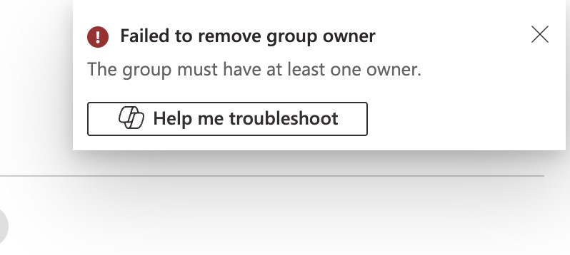

Removal of the administrative user from the dynamic group.
While working as a Cloud Administrator, I encountered a problem that I believe many of you have faced as well.
I needed to remove a User Administrator who was responsible for managing a dynamic security group. At first, I thought it would be a simple task—but I quickly realized that Azure doesn’t allow a dynamic group to exist without at least one assigned owner.
In this post, I’ll walk you through what happened and how I resolved the issue, so you can avoid the same mistake and handle it more efficiently when it happens to you.
Go to your dynamic security group > manage > owners on your left side. In this example we just have one assigned person who is in charged of the asigned security group. Which is Nick Dilan. Select your user and click remove.
You will get a fail error which says:
"Failed to remove group owner."
This happens because a dynamic security group must always have at least one assigned owner—someone responsible for managing it. That’s why Azure didn’t allow you to remove Nick Dilan as the group owner.
To resolve this, you’ll need to add another user and assign them as an owner first. Once the new owner is in place, you can safely remove the original one.
Lets choose our dear college Laura Dunes.
Now that we have added Laura as a owner, we can remove Nick.
Finally Nick was removed.
Now we just have Laura as a owner. Remember if you want to remove Laura, you have to first add another user, assign owner responsabilities and then after you have done all of that, then you can remove Laura.
This was just a short project I wanted to share with you because, in my experience, I ran into this issue while working as a Cloud Administrator. I didn’t understand why I couldn’t remove a user who was leaving the company. I wanted to revoke the credentials assigned to him, but he was the only owner of a dynamic security group—something I hadn't realized at the time.
CLICK HERE TO GO BACK TO PROJECTS